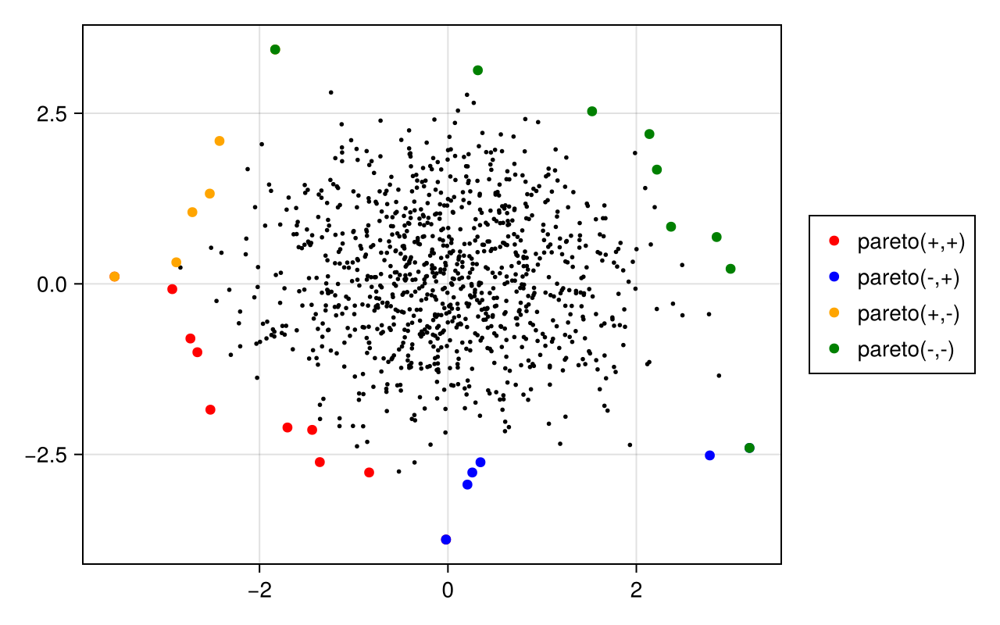

ParetoEfficiency.jl Documentation
A simple Julia package to calculate the Pareto front of a set of points.
Installation
This package is not registered. Install with:
using Pkg
Pkg.add(url="https://github.com/cossio/ParetoEfficiency.jl")Reference
This package only exports one function:
ParetoEfficiency.pareto_front — Function
pareto_front(X)Returns indices i[1], i[2], ..., i[K] of the Pareto optimal points. Here X is a cost matrix, with the costs of point i along the row X[i,:].
Other unexported functions:
ParetoEfficiency.strong_dominance — Function
strong_dominance(x, y)Returns true if costs x dominate y in the Pareto sense.
ParetoEfficiency.weak_dominance — Function
weak_dominance(x, y)Returns true if costs x dominates y in the Pareto sense, or if x == y.
ParetoEfficiency.is_pareto_optimal — Function
is_pareto_optimal(i, X)Returns true if point i is Pareto optimal. Here X is a cost matrix, and the costs of a point j are along the row X[j,:].
is_pareto_optimal(i, xs...)Returns true if point i is Pareto optimal. Here xs are cost vectors. The costs of point i are the list [x[i] for x in xs].
Example
using ParetoEfficiency, CairoMakie
N = 1000
X = randn(N, 2)
fig = Figure(resolution=(640, 400))
ax = Axis(fig[1,1])
scatter!(ax, X[:,1], X[:,2], color=:black, markersize=4)
p = pareto_front(X[:,1], X[:,2])
scatter!(ax, X[p,1], X[p,2], label="pareto(+,+)", color=:red)
p = pareto_front(-X[:,1], X[:,2])
scatter!(ax, X[p,1], X[p,2], label="pareto(-,+)", color=:blue)
p = pareto_front(X[:,1], -X[:,2])
scatter!(ax, X[p,1], X[p,2], label="pareto(+,-)", color=:orange)
p = pareto_front(-X[:,1], -X[:,2])
scatter!(ax, X[p,1], X[p,2], label="pareto(-,-)", color=:green)
Legend(fig[1,2], ax)
fig